Wilayah tanpa sinyal
Titik blank spot bukan pengecualian — itu medan kerja harian tim SAR. Perangkat yang butuh sinyal seluler untuk sekadar membuka peta akan mati fungsi persis saat paling dibutuhkan.
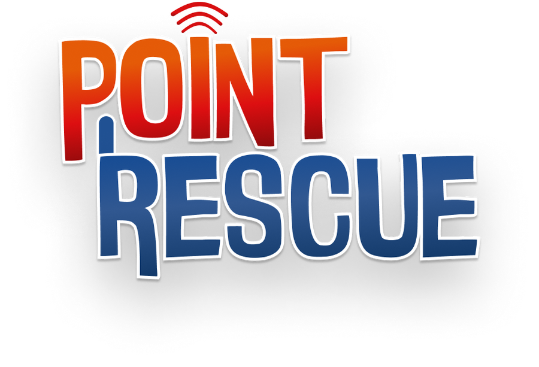
Signal Lost. Lives Found.
PKM-KC 2026 · Universitas Brawijaya
Pelacak taktis wearable berbasis algoritma controlled flooding untuk menemukan korban bencana lewat jaringan radio di wilayah yang kehilangan seluruh sinyal.
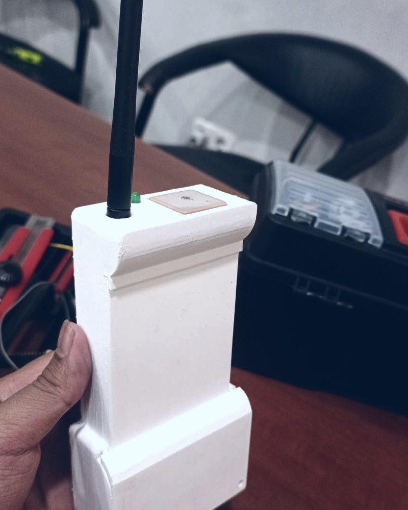
01 — Masalah
Operasi pencarian selalu terjadi di tempat yang paling tidak diinginkan teknologi: hutan, lereng gunung, lembah sungai, kawasan yang baru diratakan bencana. Justru di sanalah menara seluler roboh, listrik padam, dan setiap aplikasi yang menuntut internet berhenti berguna.
Ketika jaringan padam,
pencarian dimulai dari nol.
Gulir
Titik blank spot bukan pengecualian — itu medan kerja harian tim SAR. Perangkat yang butuh sinyal seluler untuk sekadar membuka peta akan mati fungsi persis saat paling dibutuhkan.
Peluang korban selamat menurun tajam tiap jam. Setiap jam yang habis menyisir area yang salah tidak pernah kembali — dan penyisiran tanpa koordinasi adalah penyebab paling umum waktu terbuang itu.
Tanpa kanal data bersama, posko tak tahu di mana timnya dan tim tak tahu apa yang sudah disisir tim lain. Laporan berjalan lewat radio suara, satu per satu, lalu hilang begitu percakapan selesai.
Point Rescue berangkat dari satu keputusan desain: jangan pernah bergantung pada infrastruktur yang paling mungkin ikut hancur.
Handy Talky dan Meshtastic sudah ada. Lalu apa bedanya Point Rescue?
Lihat komparasi sistemGambar latar tiga kartu di atas bersifat ilustratif — bukan dokumentasi penerjunan Point Rescue. Seluruhnya berlisensi bebas dan diambil dari Wikimedia Commons:
02 — Gagasan
Begitu dinyalakan, tiap unit langsung membentuk jaringan radio mandiri bersama unit lain di sekitarnya. Tidak ada kartu SIM, tidak ada pendaftaran, tidak ada server. Setiap unit sekaligus pengirim, penerima, dan penerus pesan.
PR010x24Paket yang diterima diteruskan lagi oleh node lain, sehingga jangkauan efektif jauh melampaui jangkauan satu radio. Penerusan itu dikendalikan supaya udara tidak tersumbat salinan pesan yang sama.
Data yang sama sampai ke dua tempat: dasbor operator di posko dan aplikasi Android di genggaman personel. Tim tak perlu kembali ke posko hanya untuk tahu keadaan.
Tiap keputusan teknis lahir dari satu pertanyaan: apa yang terjadi kalau bagian ini tidak bekerja? Peta punya tiga tingkat cadangan, posisi terakhir ditahan, tautan bisa dibuktikan sampai posko.
03 — Cara kerja
Perangkat kerasnya sama; yang membedakan hanya peran yang diberikan firmware. Ketiganya bicara dalam protokol identik, jadi setiap unit bisa menjadi penerus bagi unit lain tanpa pengaturan tambahan.
K korban · S tim SAR · G gateway posko
Node KORBAN
Memancarkan identitas dan koordinat berkala. Cukup satu tombol untuk aktif — tanpa layar, tanpa menu, tetap bekerja di dalam tas.
Node SAR
Selain memancar sendiri, node SAR jadi jembatan Bluetooth ke aplikasi Android: paket dari jaringan masuk ke layar, pesan dari layar keluar ke jaringan.
Node GATEWAY
Tersambung ke komputer posko lewat USB dan menuangkan seluruh lalu lintas jaringan ke dasbor operator.
04 — Anatomi
Model di bawah adalah rakitan lengkap 17 part — casing dari berkas OBJ hasil cetak, part lainnya dimodelkan sesuai ukuran aslinya. Jalur tembaga PCB sengaja tidak ditampilkan.
Menyiapkan model 3D — 17 part
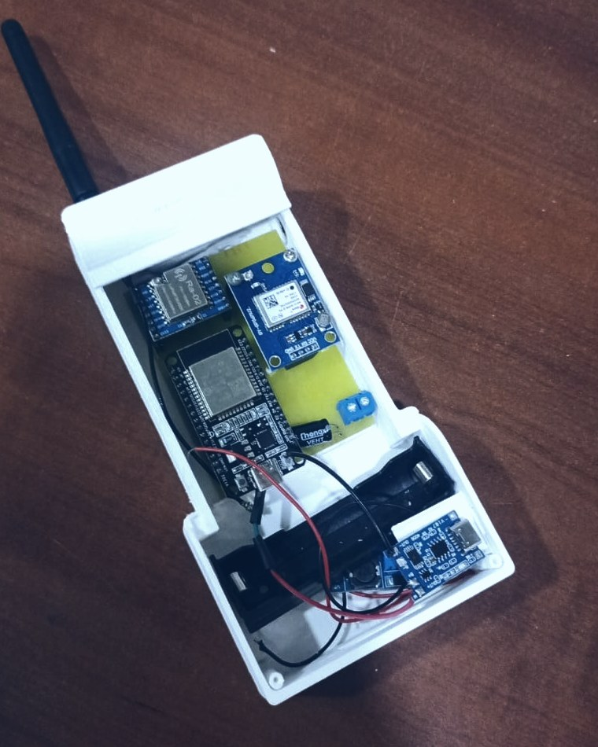
05 — Prototipe
Unit yang sama inilah yang dibawa berjalan menjauhi gateway sampai sinyalnya habis.
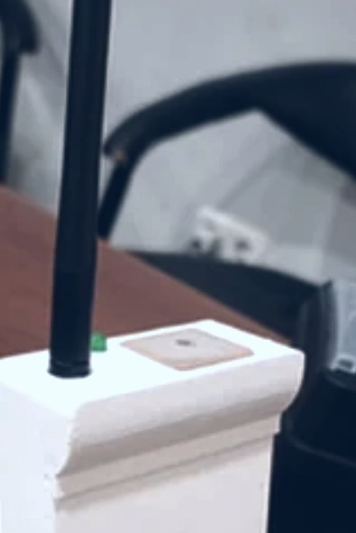
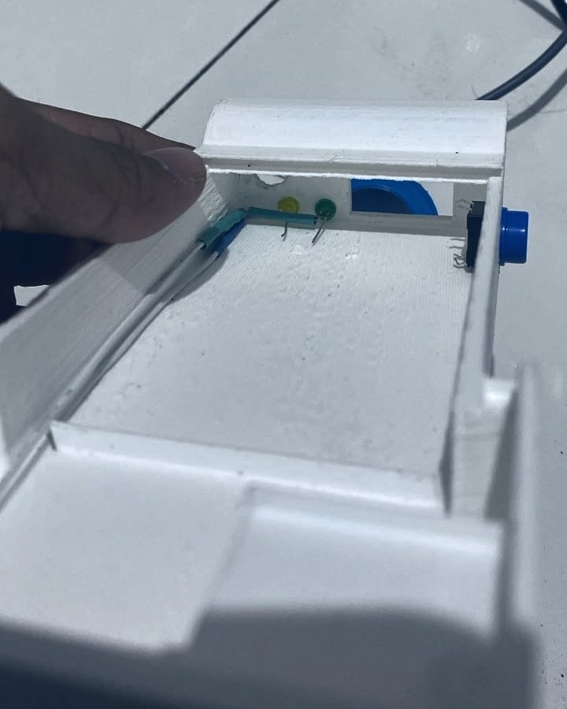
06 — Posko
Node gateway menuangkan tiap paket yang terdengar ke komputer posko. Konsol di bawah ini
berjalan dengan data hasil rekaman simulate.py — pola gerak, RSSI, dan lalu
lintas pesan yang sama seperti saat sistem dijalankan sungguhan.
Itu dashboard operator yang sesungguhnya — kode yang sama dengan yang didaftarkan
sebagai HKI — berjalan di dalam halaman ini dengan data hasil rekaman
simulate.py: empat node, pola gerak dan lalu lintas paket yang sama
seperti saat sistem dijalankan sungguhan.
07 — Pengujian
Seluruh angka di bawah ini ditarik dari rekaman serial gateway pada delapan sesi lapangan — paket yang benar-benar diterima posko, bukan simulasi dan bukan hitungan teoretis. Yang ditampilkan termasuk yang tidak enak dibaca: node yang mati-hidup sendiri, paket yang datang tanpa posisi sah, dan sesi dengan PDR di bawah 30 persen.
Sumbu jaraknya berskala akar supaya seratus meter pertama tidak berdesakan di tepi kiri — di situlah sinyalnya jatuh paling curam. Hanya paket hop-0 yang dipakai: paket hop-1 membawa RSSI node yang merelai, bukan node asalnya, dan memasukkannya akan membuat grafik seolah makin jauh sinyal makin kuat. Paket tanpa fix GPS juga dibuang karena koordinatnya karangan firmware. Klik nama sesi untuk menyaring.
Batang berarsir berarti paket itu sampai lewat relai node lain, bukan langsung. Batang putus-putus pada uji multi-hop adalah batas atas: penguji mencatat bahwa lima belas paket terakhir kemungkinan direlai walau terhitung nol hop, jadi angka yang boleh disebut tautan langsung adalah batang penuhnya.
Dihitung dari kesinambungan nomor urut paket. Satu node memakai satu penghitung untuk semua jenis paket, jadi ini PDR agregat per node — lubang di deretan nomor memberi tahu ada paket hilang, tapi tidak memberi tahu jenisnya.
Saat GPS belum mengunci satelit, firmware tetap mengirim paket — dengan koordinat karangan yang sama untuk setiap node. Paket seperti itu dibuang dari analisis jarak, dan di aplikasi lapangan ditandai posisi lama. Penandaan itu bukan hiasan: ia jawaban atas batang merah di grafik ini.
Gateway tidak punya GPS. Pada 30 Juli titiknya diukur dengan menempelkan satu node ber-GPS di posko; pada 14 dan 18 Agustus titiknya diambil dari paket ber-RSSI terkuat. Perkiraan itu meleset 8 m dan 16 m dari titik terukur — sebanding dengan galat fix GPS itu sendiri, tapi jangan sebut sumbu jarak dua sesi itu hasil pengukuran.
Satu node, satu penghitung nomor urut untuk semua jenis paket. Jangan mengklaim “PDR SOS sekian persen” dari data ini.
Angkanya adalah jarak terjauh yang kebetulan diuji pada sesi itu. Sesinya berhenti karena orangnya berhenti berjalan, bukan karena sinyalnya habis. Jangan sebut angka ini spesifikasi jangkauan.
Jumlah node, lama rekaman, dan medannya berbeda-beda; sesi 24 Juli bahkan memakai firmware dengan format berbeda, dan dua sesi tidak punya tanggal tercatat. Jangan mengurutkannya sebagai “makin lama makin baik”.
Nomor urut paket kembali ke awal tiap kali sebuah node menyala ulang — 22 kali
sepanjang delapan sesi, sejak rekaman paling awal. Data ini membuktikan kejadiannya, tapi
tidak sebabnya: tegangan jatuh, program crash, dan kabel longgar meninggalkan jejak yang
sama persis di rekaman gateway. Firmware sekarang mencetak baris [BOOT] berisi
sebab reboot menurut ESP32 sendiri.
Parameter radionya sama di ketiga peran — SF10, BW 125 kHz, CR 4/5, sync word
0x24 — dan itulah yang membuat kedelapan sesi bisa dibandingkan. Pada uji
multi-hop, gateway diam, satu node menjauh, satu node berdiri di tengah: delapan paket
terbukti sampai lewat relai, terjauh 391 m, sementara tautan langsung terjauh yang
tercatat 1.891 m.
Angka dihitung tools/anchorpulse.py dari rekaman serial gateway, lalu disusun jadi
validasi/data.js oleh tools/susun_validasi.py. Halaman ini menyajikan,
tidak menghitung ulang.
08 — Genggam
Aplikasi Android tersambung ke node SAR lewat Bluetooth Low Energy. Lima wilayah kerja — Dasbor, Peta, Node, Pesan, Lainnya — dan seluruhnya berfungsi tanpa internet. Yang berjalan di ponsel sebelah ini aplikasinya sendiri, di-build ke web dari kode Flutter yang sama: ketuk tab bar-nya, geser petanya, buka rincian nodenya.
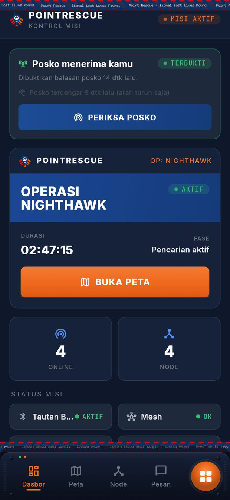
Menyalakan aplikasi
09 — Kekayaan intelektual
Dua ciptaan Point Rescue disusun jadi dokumen pendaftaran HKI. Seluruh kutipan kode di dalamnya dibangkitkan langsung dari program yang didaftarkan, jadi dokumennya tidak mungkin melenceng dari perangkat lunaknya.
Ciptaan 1
Ciptaan 2
10 — Tim
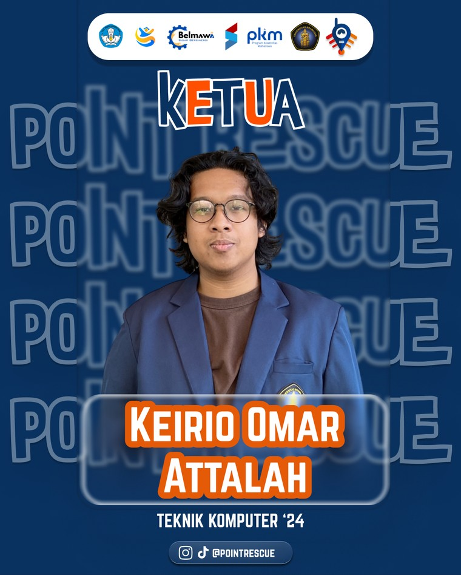
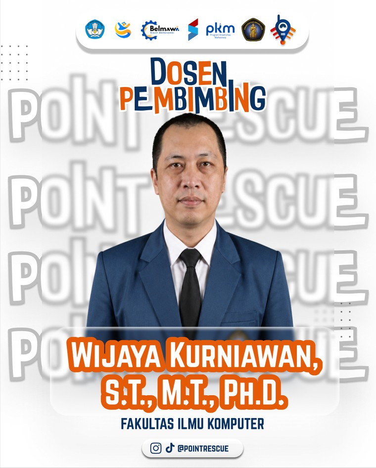
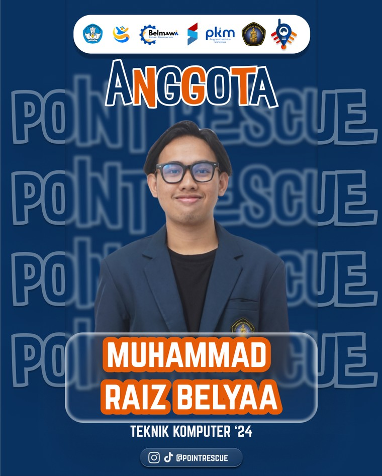
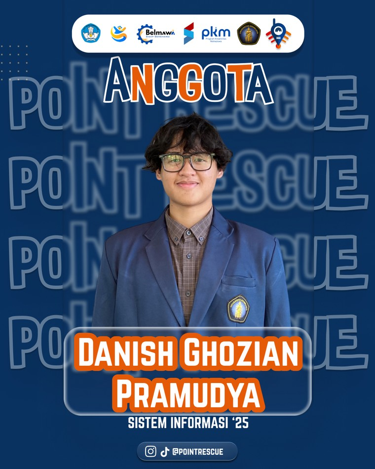
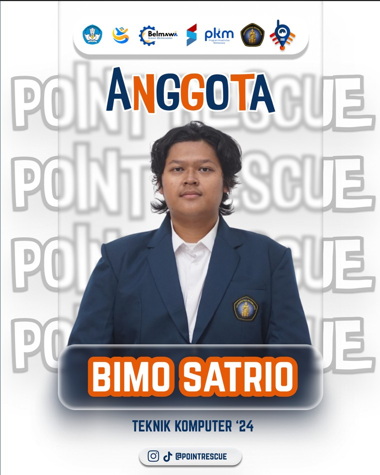
POINTRESCUE: Pelacak Taktis Wearable Berbasis Algoritma Controlled Flooding untuk Menemukan Korban Bencana dengan Sistem Komunikasi Radio di Wilayah Tanpa Sinyal